Diabetic Retinopathy Grading
Brief Description
This project is a term project for Medical Image Analysis course offered in Spring 2022 by Prof Nirmalya Ghosh at IIT Kharagpur. Sneha and I teamed up to complete this project.
The final report of the project can be accesible from here : Report
The final slides of the project can be accesible from here : Slides
Problem
Diabetic Retinopathy is a complication of diabeties that effect eye. DR is the major cause of blindness in India, which accounts for 30% of DR cases in the world. Early diagnosis of DR can reduce the risk of blindness by 90%. Causes for DR can be identified using the following features:
- Hemmorages
- Exudates
- Abnormal growth of blood vessels
| Class and Label | No DR - 0 | Mild - 1 | Moderate -2 | Severe - 3 | Proliferate - 4 |
|---|---|---|---|---|---|
| Image | 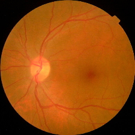 | 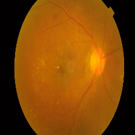 |  |
 |
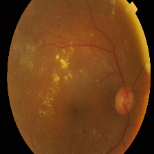 |
| Description | No presence of DR features. Clean Eye | At least one microaneurysm present on retinal exam | Multiple microaneurysms, dot-and-blot hemorrhages, venous beading, and/or cotton wool spots | Cotton wool spots, venous beading, and severe intraretinal microvascular abnormalities (IRMA) | Growth of new blood vessels, Blood vessels bleeding, Retinal detachment |
Methods
Method 1 : Deep Feature Extraction + External Classification
The first method was to extract features from the images using pretrained model Inception V3. Inception V3 is trained on the ImageNet dataset and can be used as a feature extractor.The extracted features are used as inputs to difeerent ML classifiers. The statistical results are tabulated for each classifier with and without data augumentation.
| Classifier | Accuracy | Precision | Recall | F1 Score |
|---|---|---|---|---|
| KNN | 0.7848 | 0.79 | 0.78 | 0.78 |
| SVM | 0.7818 | 0.78 | 0.78 | 0.78 |
| Random Forest | 0.8091 | 0.81 | 0.81 | 0.81 |
| XGBoost | 0.8121 | 0.81 | 0.81 | 0.81 |
| DNN | 0.7787 | 0.77 | 0.77 | 0.77 |
From the results above that it is clear that Random Forest and XGBoost are performing well but XGBoost is outperforming by a slight marging. As we all know we can let the model learn image invariances and which can be lead to an improved performance. The following data augumentation are performed to increase the performance of the model.
- Rotation
- Resizing
- Gaussian Noise
- Histogram Equalization
The results of the model with data augumentation are as follows.
| Classifier | Accuracy | Precision | Recall | F1 Score |
|---|---|---|---|---|
| KNN | 0.9064 | 0.90 | 0.90 | 0.90 |
| SVM | 0.9102 | 0.91 | 0.91 | 0.91 |
| Random Forest | 0.9707 | 0.97 | 0.97 | 0.97 |
| XGBoost | 0.9707 | 0.97 | 0.97 | 0.97 |
| DNN | 0.9757 | 0.97 | 0.97 | 0.97 |
Method 2 : End-to-End Deep Neural Net based Classification
Now our approach is to use the state of the art deep neural networks for end-to-end classification. For this task we can go with either fine-tuning or traning from scratch.
- Training from scratch : This method work well only if we had a large set of images (but we have only 2667 for training for binary classification and 2963 for multi class classification)
- Fine-tuning : This methods works well even if we have a small set of images(2667 and 2963 are good enough to produce reasonable results). All fine tuning models are trained on ImageNet dataset which is a large dataset with over 1 million images and 1000 categories.
- VGG - VGG19 is a standard 19 layer convnet with that achieved SOTA results on ImageNet in 2013. Commonly used as a feature extractor for downstream tasks such as image classification, detection, segmentation etc.
- ResNet - ResNet is a builds upon VGG network. It utilizes skip connections to jump over layer that help in gradient propagation, local - global feature interactions. We will be using ResNet18 with 18 convolutional layers.
- EfficinetNet : EfficientNet builds upon basis that appropriate depth, width and resolution of the networks are essential for best performance. It uses a depth, width, resolution scaling factor to develop a network that is efficient for a given task. We will be using EfficientNetB0 which is a base network.
- ConvNext : After Visual Transformers, convnext uses the best practices from both natural language and vision to create a set of convnext variants. ConvNext are current state of the art convolutional neural networks for image classification on benchmark dataset ImageNet. We will be using ConvNext-Tiny variant for this task.
We have tried with training from scratch but that doesn't gone well. If had time I'll try post those results as well(I have re-run the experiments to get the results). The maximum accuracy achieved with the training from scratch is ~90% . Now we will fine-tune pretrained layers to match the number of classes. Following are the results for binary classification ({No DR, DR}) and multi class classification ({No DR, Mild DR, Moderate DR, Severe DR, Proliferate DR}) using fine-tuning .
| Model | Accuracy | Precision | Recall | F1 Score | False classifications(out of 800) |
|---|---|---|---|---|---|
| VGG19 | 0.977 | 0.98 | 0.98 | 0.98 | 18 |
| ResNet18 | 0.974 | 0.97 | 0.97 | 0.97 | 21 |
| EfficientNet-B0 | 0.974 | 0.97 | 0.97 | 0.97 | 21 |
| ConvNext-Tiny | 0.981 | 0.98 | 0.98 | 0.98 | 13 |
| Model | Accuracy | Precision | Recall | F1 Score | False classifications(out of 704) |
|---|---|---|---|---|---|
| VGG19 | 0.9644 | 0.96 | 0.92 | 0.94 | 25 |
| ResNet18 | 0.99 | 0.98 | 0.98 | 0.98 | 7 |
| EfficientNet-B0 | 0.997 | 0.99 | 0.99 | 0.99 | 2 |
| ConvNext-Tiny | 0.995 | 0.99 | 0.99 | 0.99 | 3 |
Model Understanding
We just not only want a model that can classify DR but give reasonings for the classifications. There are quite a few popular methods that can be used to understand the model. We will be using Visual Explanations to understand the model. We'll see Saliency Maps, Gradient based Attributions, DeepLIFT, Guided Backpropagation. The following table shows the outputs of visual explanations from the model.
| Class | Input Image | Overlayed Gradient Magnitudes | Overlayed Integrated Gradients | DeepLIFT |
|---|---|---|---|---|
| Mild DR | 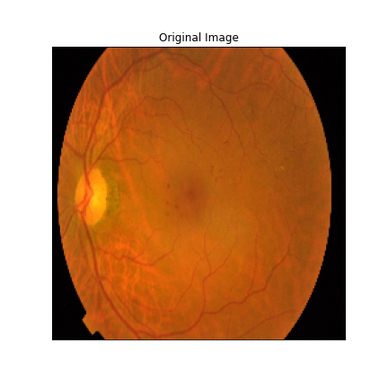 | 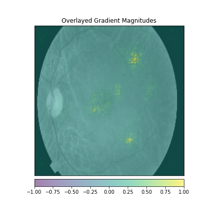 | 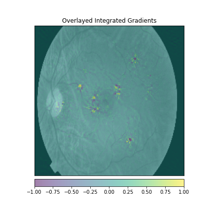 | 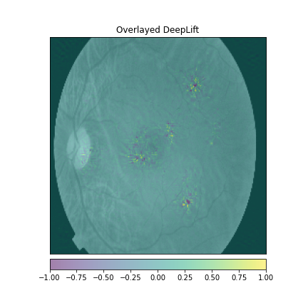 |
| Moderate DR | 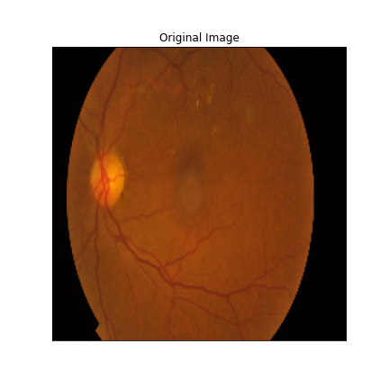 | 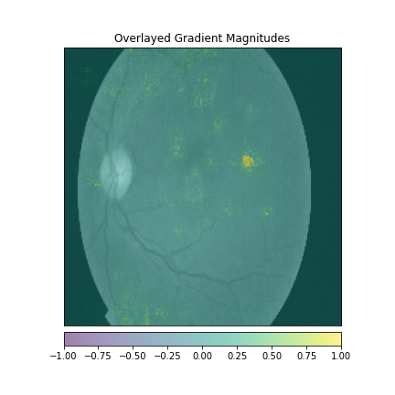 | 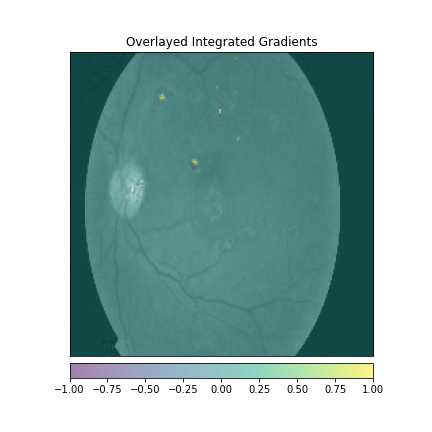 | 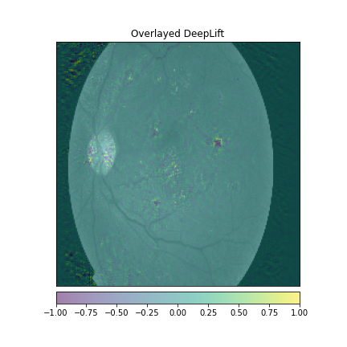 |
| Severe DR | 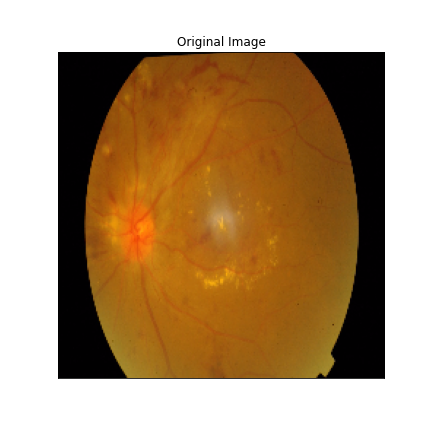 | 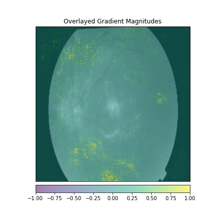 | 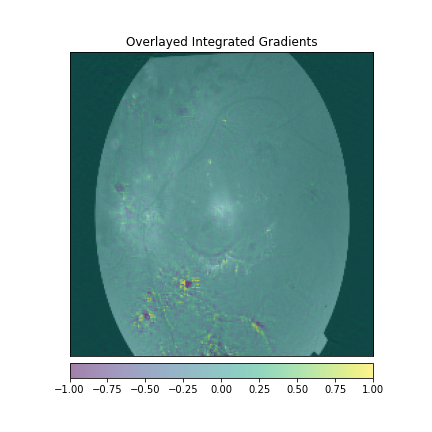 | 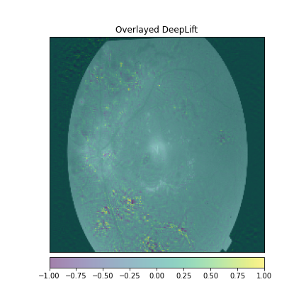 |
| Proliferate DR | 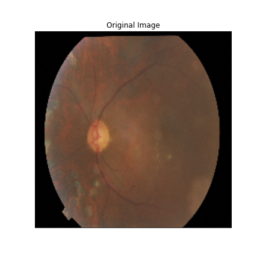 | 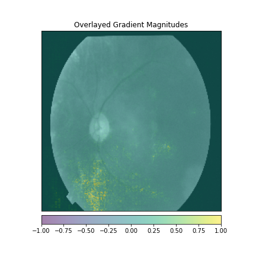 | 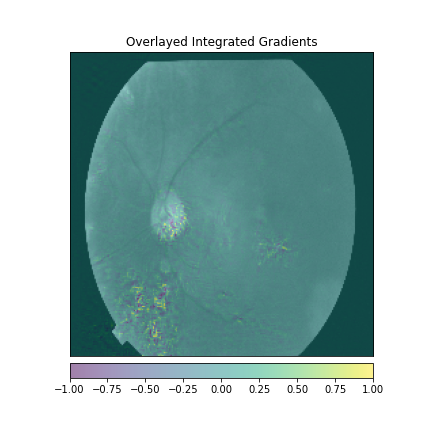 | 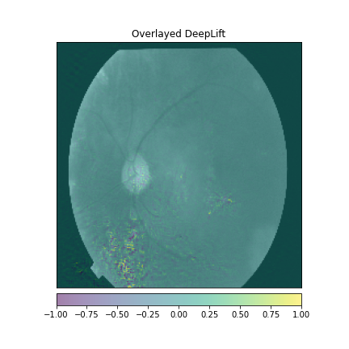 |
Conclusion
The obtained results indicate that modern deep networks outperform traditional methods by significant margins (without data augmentation). The are train and test set are obtained from the APTOS 2019 Blindness Detection dataset. The shown results are not representative of the real world. The results are obtained on a small dataset. Given that 99.8% accuracy doesn't mean that DR recognition problem is solved. The accuracy is only very small set of images that are not representative of the real world scenarios. There are still gaps exists in taking these models to the real world. Following are the list of few(out of many) problems.
Probelms
- Expert labes are very costly. Hoping to create a large dataset(Millions of images) with expert labels is unfeasible task.
- Noisy labels create a mess for the models. The quality of the model is of prime importance.
- Data bias is a huge probelm in medical domain. Models are being trained on single dataset which is collected from one source / hospital / region. This induces the local bias in the model. The model performance then never matters if it can work well on differnent dataset.
Forward directions
Currently the researchers are working towards the following solutions.- Since expert labels costly. Developing robust and high performance Unsupervised / Semisupervised alogrithms can be a game changer.
- Training the models on multiple dataset can make model more robust. Federated Learning can be used to train the models on multiple datasets. In federated learning, the model is trained using distributed and centralized process where data is securely stored at its origin.